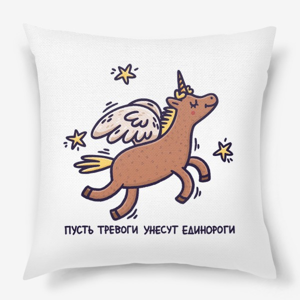
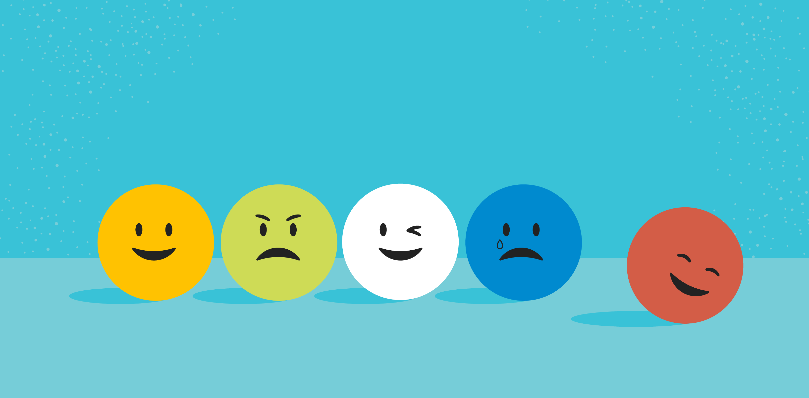

🦄 Самооценка и самопринятие 🦄 Self Эмоциональное выгорание - стадии и симптомы, методы восстановления и профилактики Автор: Лиза Файнтук Изначально термин «эмоциональное профессиональное выгорание» относился к людям помогающих профессий. 21.08.2021
🦄 Self Как не утонуть в тревоге и управлять своими страхами Автор: Екатерина Бельтюкова Один из самых важных навыков, который может дать работа с психотерапевтом. 11.08.2021
🦄 Самооценка 🦄 Психология питания Эмоциональное выгорание - стадии и симптомы, методы восстановления Автор: Лиза Файнтук Изначально термин «эмоциональное профессиональное выгорание»... 21.08.2021
 🦄 Self Как не утонуть в тревоге и управлять своими страхами Автор: Екатерина Бельтюкова Один из самых важных навыков, который может дать работа... 11.08.2021
 🦄 Self Как управлять своими эмоциями: 8 шагов Автор: Екатерина Бельтюкова Клиенты часто спрашивают, как контролировать негативные эмоции. 07.08.2021
🦄 Self Эмоциональное выгорание - стадии и симптомы Автор: Лиза Файнтук Изначально термин «эмоциональное выгорание» относился... 21.08.2021
🦄 Self Как не утонуть в тревоге и управлять своими страхами Автор: Екатерина Бельтюкова Один из самых важных навыков, который может дать работа... 11.08.2021
🦄 Self Как управлять своими эмоциями: 8 шагов Автор: Екатерина Бельтюкова Клиенты часто спрашивают, как контролировать эмоции. 07.08.2021